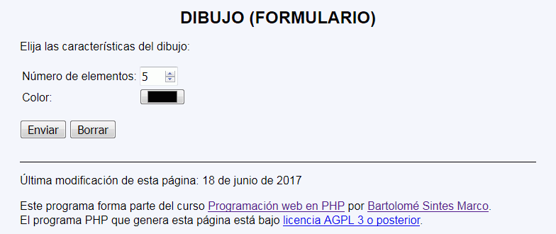
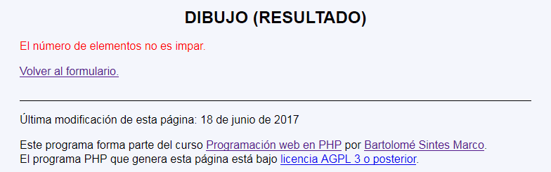
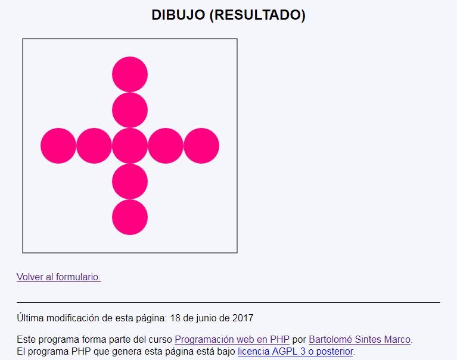
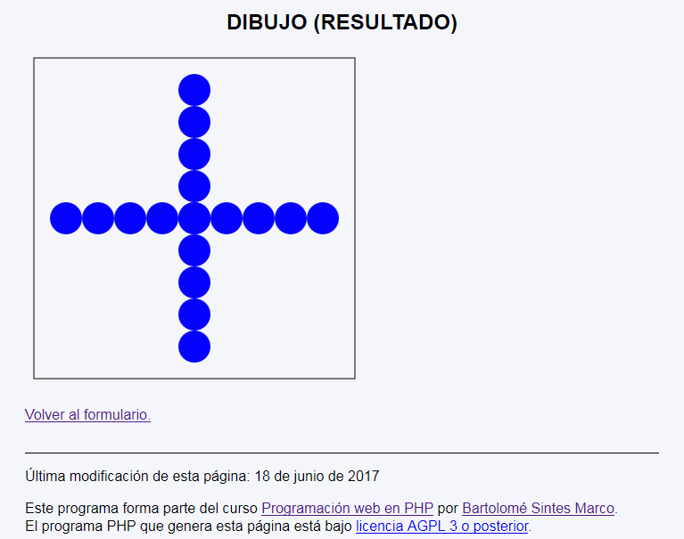
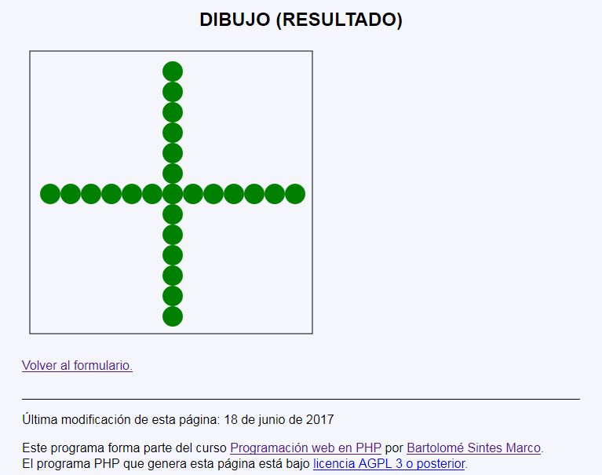

Dibujo 3 - Ejemplo de programa
Nota: El día del examen los alumnos no tienen acceso a este ejemplo, solamente tienen acceso a las capturas del apartado anterior.
Un ejemplo de programa puede probarse en la ventana siguiente:
En este ejercicio se debe crear un programa que muestre una cruz formada por un número impar de círculos de colores.





<h1>Dibujo (Resultado)</h1>
<p>
<svg xmlns="http://www.w3.org/2000/svg" width="380" height="380" viewBox="-10 -10 380 380">
<rect x="0" y="" width="360" height="360" fill="none" stroke="black" />
<circle cx="180" cy="90" r="45" fill="#008000" />
<circle cx="180" cy="180" r="45" fill="#008000" />
<circle cx="180" cy="270" r="45" fill="#008000" />
<circle cx="90" cy="180" r="45" fill="#008000" />
<circle cx="180" cy="180" r="45" fill="#008000" />
<circle cx="270" cy="180" r="45" fill="#008000" />
</svg>
</p>
<h1>Dibujo (Resultado)</h1>
<p>
<svg xmlns="http://www.w3.org/2000/svg" width="380" height="380" viewBox="-10 -10 380 380">
<rect x="0" y="" width="360" height="360" fill="none" stroke="black" />
<circle cx="180" cy="60" r="30" fill="#ff8000" />
<circle cx="180" cy="120" r="30" fill="#ff8000" />
<circle cx="180" cy="180" r="30" fill="#ff8000" />
<circle cx="180" cy="240" r="30" fill="#ff8000" />
<circle cx="180" cy="300" r="30" fill="#ff8000" />
<circle cx="60" cy="180" r="30" fill="#ff8000" />
<circle cx="120" cy="180" r="30" fill="#ff8000" />
<circle cx="180" cy="180" r="30" fill="#ff8000" />
<circle cx="240" cy="180" r="30" fill="#ff8000" />
<circle cx="300" cy="180" r="30" fill="#ff8000" />
</svg>
</p>
<h1>Dibujo (Resultado)</h1>
<p>
<svg xmlns="http://www.w3.org/2000/svg" width="380" height="380" viewBox="-10 -10 380 380">
<rect x="0" y="" width="360" height="360" fill="none" stroke="black" />
<circle cx="182" cy="26" r="13" fill="#ff8000" />
<circle cx="182" cy="52" r="13" fill="#ff8000" />
<circle cx="182" cy="78" r="13" fill="#ff8000" />
<circle cx="182" cy="104" r="13" fill="#ff8000" />
<circle cx="182" cy="130" r="13" fill="#ff8000" />
<circle cx="182" cy="156" r="13" fill="#ff8000" />
<circle cx="182" cy="182" r="13" fill="#ff8000" />
<circle cx="182" cy="208" r="13" fill="#ff8000" />
<circle cx="182" cy="234" r="13" fill="#ff8000" />
<circle cx="182" cy="260" r="13" fill="#ff8000" />
<circle cx="182" cy="286" r="13" fill="#ff8000" />
<circle cx="182" cy="312" r="13" fill="#ff8000" />
<circle cx="182" cy="338" r="13" fill="#ff8000" />
<circle cx="26" cy="182" r="13" fill="#ff8000" />
<circle cx="52" cy="182" r="13" fill="#ff8000" />
<circle cx="78" cy="182" r="13" fill="#ff8000" />
<circle cx="104" cy="182" r="13" fill="#ff8000" />
<circle cx="130" cy="182" r="13" fill="#ff8000" />
<circle cx="156" cy="182" r="13" fill="#ff8000" />
<circle cx="182" cy="182" r="13" fill="#ff8000" />
<circle cx="208" cy="182" r="13" fill="#ff8000" />
<circle cx="234" cy="182" r="13" fill="#ff8000" />
<circle cx="260" cy="182" r="13" fill="#ff8000" />
<circle cx="286" cy="182" r="13" fill="#ff8000" />
<circle cx="312" cy="182" r="13" fill="#ff8000" />
<circle cx="338" cy="182" r="13" fill="#ff8000" />
</svg>
</p>
Nota: El día del examen los alumnos no tienen acceso a este ejemplo, solamente tienen acceso a las capturas del apartado anterior.
Un ejemplo de programa puede probarse en la ventana siguiente: